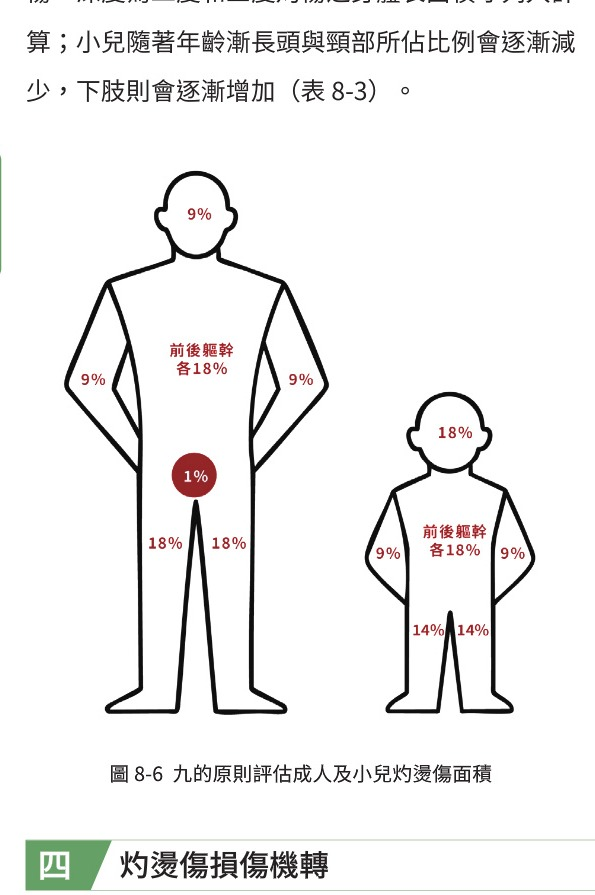
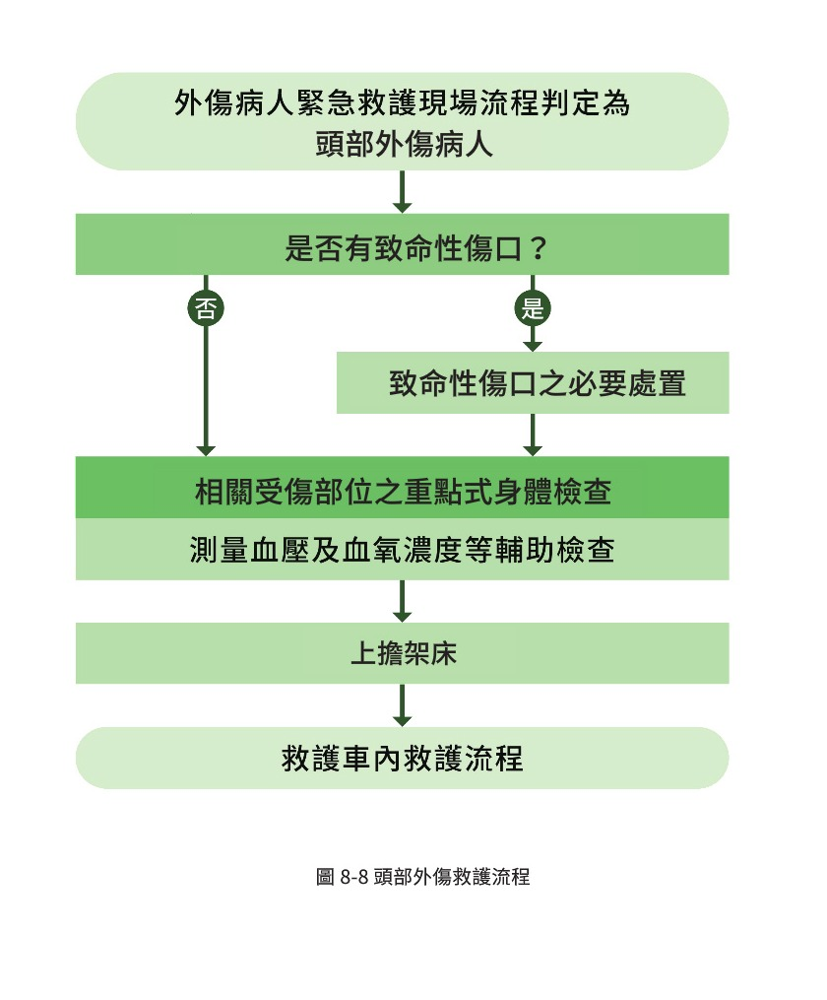
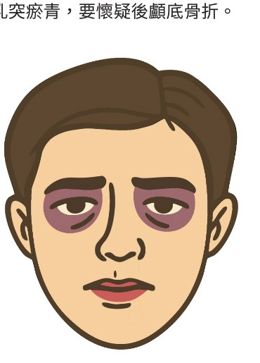
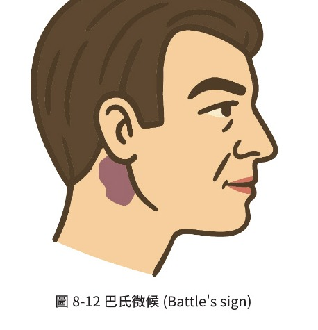

第八章 常見外傷評估、處置與情境操作
本章以外傷病人到院前救護為主軸：先穩住生命徵象，再依部位辨識致命傷口，完成必要處置、固定與後送判斷。
- 流程不是背圖：每個部位流程都在問「有沒有致命傷口」與「哪些必要處置不能等」。
- 外傷先看會死的：大出血、呼吸道阻塞、呼吸困難、休克、意識變化、神經缺損。
- 後送是處置的一部分：危急個案不要在現場追求完整治療，重點是快速穩定與轉送。
初級評估
控制致命外出血、保護頸椎、處理呼吸道與呼吸、循環、失能與暴露。
現場處置時間
重大外傷除必要 XABCDE 與頸椎減移外，現場處置時間儘量控制在 10 分鐘內，迅速後送適當外傷中心。
運送途中仍會惡化
生命徵象、意識、疼痛、遠端循環與呼吸型態須持續追蹤。
01 外傷總論
外傷病人的處置核心，是用結構化評估快速找出致命問題，並決定是否需要立即後送。
- 事故傷害是重要死因，年輕族群受影響尤其明顯；到院前處置會影響存活率與預後。
- 外傷可依受傷部位分類：頭、頸、胸、腹、骨盆、四肢、背部等。
- 也可依受傷機轉分類：加減速傷害、輾壓傷、鈍挫傷、穿刺傷、爆炸傷、能量化學傷害等。
- 現場評估：自我防護、現場安全、受傷機轉、傷者數量、支援與特殊救援資源。
- 初級評估：接觸前判斷是否需要頸椎減移；若不確定，一律先視為頸椎傷害。
- 依 XABCDE 完成初評、病史詢問、輔助檢查與重點式身體檢查，必要時聯絡指揮中心或急診。
GCS≤14、呼吸過快或過慢、脈搏過快或過慢、收縮壓過高或過低、微血管回填延長、體溫異常、SpO2<90%。
大面積燒傷、頭頸軀幹或肘膝以上穿刺傷、大量皮下氣腫、氣管支氣管損傷、內臟外露、長骨或骨盆骨折等。
高處墜落、脫困時間長、遠端肢體被輾壓、車內拋出、同車死亡、高能量撞擊等。
血糖過低或 high、疑似急性腦中風、缺血性胸痛、持續抽搐、中毒、小兒評估危急、孕產婦、毒蛇咬傷、溺水等。
現場評估與處置應以穩定病人為優先，並以無線電回報目前狀況。依緊急醫療救護法與各地作業程序，將緊急傷患送至急救責任醫院或就近適當醫療機構；若符合重大外傷條件，優先送外傷中心。
02 外傷病人到院前心跳停止救護流程
外傷心跳停止處理原則接近心跳停止流程，但要同時處理大出血並避免延誤後送。
- 若大出血使血容量快速下降，心跳停止後單靠 CPR 效果有限，必須同步止血。
- 流程重點是減少按壓中斷、給氧與建立輔助呼吸道，並儘速轉送急救責任醫院或適當機構。
- 外傷心跳停止仍要注意「Load and Go」概念，避免在現場做過多非必要處置。
03 出血與休克
出血與休克的判讀，要同時看「血液是否流失」與「組織灌流是否不足」。休克指數在本章以文字判讀，不使用圖表。
- 外出血：血液流出體外；動脈出血量多且快，不易止血；靜脈較緩慢；微血管可直接加壓。
- 內出血：血液溢散至體內，外觀不一定明顯，需由機轉、疼痛、休克徵象推測。
- 休克：組織灌流不足造成細胞缺氧、代謝受阻，最後導致細胞死亡。
- 低血容性：血液或體液流失過多，外傷最常見為出血性休克。
- 非低血容性：包含心因性、神經性、阻塞性、過敏性與敗血性休克。
外傷最常見，與出血量多寡有關；非外傷低血容性可見於體液喪失，如消化道出血。
心臟功能受損，如心肌挫傷、心臟損傷。
神經損傷造成交感神經失效，如脊椎受傷。
氣體或液體壓迫心臟或栓塞，如心包膜填塞、張力性氣胸、肺栓塞。
嚴重過敏反應，常見於食物、藥物、蜂蛇蟲咬。
感染或嚴重發炎造成敗血症。
- 意識：焦慮、躁動、意識程度改變，要懷疑腦部缺氧或損傷。
- 呼吸道：意識不清需評估暢通，過敏性休克可能有支氣管收縮、分泌物增加、黏膜水腫或喘鳴。
- 呼吸：休克代償會使呼吸變快、變深，必要時給予正壓通氣與足夠氧氣。
- 循環：早期心搏加快與血管收縮；嚴重時灌流不足，脈搏持續快、收縮壓下降、皮膚蒼白或發紺、濕冷，微血管回填延長或周邊脈搏摸不到。
- 失能：以 GCS 量化腦部受傷程度，嚴重者快速送至中度或重度級急救責任醫院。
- 暴露：檢查是否有致命性傷害造成休克。
- 輔助檢查：血壓、血氧、脈搏、體溫、血糖、瞳孔、肺音等；休克指數 HR/SBP > 1 應懷疑休克。
- 優先處理呼吸道與呼吸，必要時建立呼吸道、正壓通氣、給氧。
- 減少血液喪失：止血、包紮、骨折固定。
- 靜脈輸液以乳酸林格氏液為首選，其次生理食鹽水；成人首次以 1 公升為限，小於 40 kg 兒童 20 ml/kg。
- 輸液目標是恢復灌流與供氧，維持比正常稍低的血壓並快送；未確實止血前避免大量輸液造成稀釋性凝血異常。
- 維持體溫，適當姿勢上擔架床並保護隱私。
休克指數 = 心跳速率 / 收縮壓。正常約小於 1；若大於 1，代表心跳相對收縮壓偏快，可能反映代償中的低灌流或休克。它不能單獨診斷休克，但適合搭配意識、皮膚、末梢循環、血壓、出血量與受傷機轉一起判讀。
04 傷口基本處置
傷口處理順序是傷口辨識、止血、清潔、覆蓋敷料、包紮、固定；若有立即可見且持續外出血，止血優先於清潔。
傷口類型
- 先考慮危及生命問題，如呼吸道遇阻、大出血、休克與生命徵象不穩。
- 完整評估，不只依主訴檢查傷口；去除戒指、首飾等可能阻礙血流物品。
- 加壓止血：最有效方式，至少 5 分鐘；若無法控制再考慮彈繃加壓或止血帶。
- 止血帶：適用肢體大量、搏動性或持續性出血，位置在出血處上方 5-8 公分；拉緊、扭轉至止血並記錄時間。
- 填塞止血：適合肢體與軀幹交界處，如鼠蹊、腋下、頸部；以含止血成分紗布優先，填至滿後加壓 3 至 10 分鐘並固定包紮。
- 穿刺異物不要拔除；胸部異物已拔除時，需考慮氣胸可能。
- 非乾淨傷口以生理食鹽水沖洗；不易沖洗處可用濕紗或棉棒配合清潔。
- 敷料可用生理食鹽水沾濕紗布；覆蓋時不要滑動，須完全覆蓋傷口。
- 若血滲透敷料，不拆原本敷料與固定物，由外面繼續加蓋敷料。
- 包紮前先控制出血，覆蓋敷料後再包紮；四肢包紮需露出末端以觀察循環。
- 固定前先穩定生命徵象；懷疑骨折者皆當作骨折，固定範圍超過近端與遠端關節，前後檢查遠端脈搏、感覺、運動。
05 灼燙傷
灼燙傷評估要看原因、深度、面積、部位、年齡與合併疾病；一度灼傷不列入輸液計算。
- 皮膚是人體最大器官，具調節體溫、保護、感覺與代謝功能；成人皮膚面積約 1.5-2 m²。
- 由外而內分為表皮、真皮、皮下組織；真皮含毛囊、血管、皮脂腺、淋巴與神經感覺受體。
- 灼燙傷種類包含熱灼傷、電灼傷、化學灼傷、輻射灼傷、吸入性傷害與冷凍傷。
- 大型灼燙傷會造成休克、體溫喪失與感染風險。
| 深度 | 皮膚損傷 | 外觀 | 感覺 |
|---|---|---|---|
| 一度 | 表皮 | 紅、乾 | 疼痛 |
| 二度 | 表皮至真皮乳頭層或基底層 | 紅濕或白乾、水泡 | 疼痛或不敏感 |
| 三度 | 表皮至真皮全層或更深 | 死白、焦黑、焦痂或乾硬如皮革 | 消失 |

- 九的原則：成人與大於 10 歲兒童適用；二度與三度列入計算。成人：頭頸 9%、前軀幹 18%、後軀幹 18%、每上肢 9%、每下肢 18%、外陰部 1%。
- 小兒差異：頭頸比例較大，約 18%；每下肢約 14%；外陰部 0%。
- 手掌原則：成人或兒童小於 10% 或不規則灼傷可用；手掌表面約全身 0.5%，含五指合併約 1%。
- 前 8 小時給一半，後 16 小時給另一半。
- 一度灼傷不列入計算。
- 若使用「十的法則」，可將灼傷面積四捨五入後換算每小時輸液量；實務上重點是依病人反應調整。
06 頭部外傷救護流程
頭部外傷要同時顧腦灌流、氧合與頸椎保護，避免低血壓、低血氧與過度換氣。

- 致命頭部傷口包含槍傷、刀傷、穿刺傷、腦部組織外露等；處理時注意是否影響腦部運作、心跳與呼吸速率。
- 大而深或嚴重撕裂傷可能因頭皮血供豐富導致大量出血，應避免污染並直接加壓；若有頭骨凹陷或疑似開放性顱骨骨折，不可直接施加壓力。
- 異物插入不可強行移除，固定及止血後儘速送醫。
- 頭部血腫、腫脹、骨折或意識改變，都需高度懷疑腦部損傷。
- 控制致命性外出血，若低血壓要找其他低血壓原因，尤其出血。
- 未排除頸椎受傷前，實施頸椎減移。
- 評估意識與情緒焦慮程度，外傷位置或機轉不同可能造成意識改變。
- 維持呼吸道通暢與氧合，目標 SpO2 約 90-94%；意識不清可大口徑抽吸避免吸入性傷害。
- 評估呼吸：急性頭部外傷可能有 Cushing reflex，出現血壓增加、呼吸型態改變與心跳變慢。
- 評估循環：注意休克、血胸、腹腔出血、長骨出血、脊髓性休克；明顯凹陷處不可過度壓迫。
- 評估失能：GCS、瞳孔大小與對光反應、眼球活動、四肢感覺與運動功能。
- 暴露檢查被衣物遮蓋的傷處。
血氧維持 >90-94%。
維持收縮壓 >110 mmHg。
EtCO2 維持 35-40 mmHg，不低於 30。
成人約 10/min，小兒約 20/min，嬰兒約 25/min。
- 生命徵象：血壓與脈搏，尤其避免低血壓。
- 昏迷指數：追蹤 GCS 是否下降或持續變差。
- 血氧 SpO2：持續確認氧合是否足夠。
- 通氣執行者：讓專注通氣的救護技術員穩定控制換氣。
- EtCO2 數值：維持 35-40 mmHg，避免低於 30 mmHg。
- 昏迷指數變化。
- EtCO2 數值。
- 瞳孔大小與左右差異。
- 已給輸液量與血壓反應。
- 將外傷病人以適當姿勢搬運至擔架床，依病況選擇坐臥、半坐臥、平躺或其他方式，並注意保護隱私。
- 若沒有頸椎受傷問題，可採半坐臥或坐姿，以減輕腦部壓力。
- 若頸椎受傷尚未排除，搬運時以頸椎減移與固定為優先，途中持續觀察意識、瞳孔、呼吸、循環與神經學變化。
07 顏面外傷病人緊急救護處置流程
顏面外傷常伴隨出血、嘔吐物、斷裂牙齒與顱底骨折徵象，最大風險常是呼吸道阻塞。
- 發現頭部、顏面部或眼耳鼻喉部有致命性傷口，或明顯傷痕如擦傷、挫傷、切割傷、腫脹、撕裂傷等，即進入顏面外傷流程。
- 顏面部常見致命性傷口包含槍傷、穿刺傷、刀傷、大而深的傷口、嚴重撕裂傷、顏面骨折、眼眶瘀青、耳後瘀青、鼻漏、耳漏等。
- 浣熊眼是眼眶周圍瘀青，需懷疑顱底骨折；巴氏徵候是耳後乳突瘀青，需懷疑顱底骨折。
- 大而深傷口或嚴重撕裂傷：避免傷口污染，使用直接加壓止血；若有異物插入，不可強行移除，應固定與止血後儘速送醫；若出現休克症狀應給予靜脈輸液。
- 眼眶瘀青、顏面骨折合併類似浣熊眼或鼻漏時，懷疑前顱底骨折；有耳漏、耳後瘀青或巴氏徵候時，懷疑中顱底或後顱底骨折。
- 顏面部外傷可能導致鼻腔、口腔出血或下顎骨骨折，血液、嘔吐物與斷裂牙齒都可能阻塞呼吸道，應以抽吸、口咽、鼻咽或聲門上呼吸道等方式維持通暢。


- 軟組織損傷：臉頸部血液供應豐富，軟組織損傷後可能明顯出血；出血、嘔吐物及斷牙可能造成呼吸道阻塞，必要時使用抽吸或輔助呼吸道甚至插管。
- 顏面骨折到院前處置：可能合併頸椎損傷，因此需維持頸椎減移；若有明顯且持續鼻出血，僅在意識清楚且排除頸椎受傷時，才讓病人坐起身體向前傾，意識不清則視為頸椎損傷處理。
- 顏面附屬器官損傷：耳朵、眼睛、牙齒可能個別或合併受傷；器官破損可用潤濕生理食鹽水紗布覆蓋，剝離未完全掉落時先擺回原位再覆蓋包紮，完全剝離則以濕紗包覆後置於乾淨袋或容器再放入冰水。
- 異物穿刺：有異物留在顏面時，絕對不可任意拔除或移除。
- 顏面外傷評估：可見瘀血、出血、咬合不正、臉部不對稱、骨頭活動聲響、下顎活動受限、鼻漏、鼻中隔移位、眼球活動受限、視力模糊、麻木、耳漏、紅腫、痛等。
- 頸椎減移：顏面部受傷在未能排除頸椎受傷前，需高度懷疑頸椎損傷並加以減移。
- 呼吸道與呼吸：出血、嘔吐物及斷裂牙齒可能造成阻塞，維持通暢可使用抽吸、口咽、鼻咽或聲門上呼吸道；呼吸窘迫時依呼吸次數、型態與動力給予氧氣。
- 循環、失能與暴露：顏面血管豐富，小傷口也可能出血明顯；需詳細檢查傷口位置、大小、深度與受傷部位。眼、耳、鼻、喉受傷可能影響失能評估，無法評估時應記錄；也須暴露身體檢查被衣物遮蓋的傷處。
可見咬合不正、下巴麻木、嘴巴張不開，也可能無法吞嚥或口水過多。
包含上頷骨、顴骨、下眼眶骨及鼻骨，常由直接撞擊造成，也容易合併腦神經或脊髓損傷。
臉頰可能變扁平，臉頰、鼻子與上嘴唇有麻木感，並可能有流鼻血。
眼眶底部較脆弱，骨折時眼球內容物可能陷入上頷竇內。
顏面最常見骨折，臨床可見鼻子變形、腫脹及流鼻血。
將外傷病人以適當姿勢搬運至擔架床上，依病況給予坐臥、半坐臥、平躺或其他方式，並保護外傷病人隱私。若外傷病人無頸椎受傷問題，可採半坐臥或坐姿來減輕腦部壓力。
蝶骨底部發生骨折造成眼眶周圍瘀青，外觀類似浣熊眼，需懷疑顱底骨折。
耳後乳突瘀青，需懷疑顱底骨折。
08 眼耳鼻喉急症與外傷緊急救護處置流程
眼耳鼻喉外傷處理要兼顧功能保留、感染預防與呼吸道安全。
- 眼部評估：病史、受傷機轉、視力、瞳孔反應與眼球運動；化學性傷害需立即大量清水沖洗。
- 眼球挫傷、穿刺、異物、化學傷、動物咬抓等需避免壓迫眼球；隱形眼鏡不應任意取下，化學傷可在醫師指示下取下。
- 耳部外傷：撕裂、挫傷、低溫、化學、耳膜破裂與氣壓傷。撕裂或挫傷以直接加壓止血、冰敷降腫。
- 耳部組織脫落應找尋並以濕紗包覆，放乾淨塑膠袋後置於有冰塊容器，連同病人送醫。
- 鼻部外傷：鼻部血供好，出血不易止住；可用拇指與食指捏兩側鼻翼至少 10 分鐘，並用冰敷收縮血管。
- 鼻內異物可能越推越深，不建議自行取出，交由醫護處理。
- 口部外傷：成年人 32 顆牙。下巴或顏面骨折可能造成牙齒斷裂與脫落，需防止吸入與阻塞。
- 脫落恆牙 2 小時內仍可能重植，放入冰牛奶或生理食鹽水送急診；只拿牙冠，不碰牙根。
- 喉部外傷：任何傷害都可能造成出血或腫脹危及上呼吸道；頸部外傷須注意頸椎減移，異物穿刺不可自行移除。
09 脊椎外傷
脊椎外傷可由鈍挫或穿刺造成壓迫、直接損傷或血流中斷；第四節以上頸椎損傷可能影響呼吸。
- 頭、頸、軀幹或骨盆受到劇烈撞擊，例如倒塌結構壓住或外力襲擊。
- 造成頸部或軀幹加速、減速或側彎旋轉，例如交通事故、行人撞擊或爆炸。
- 任何高度墜落或跌倒，尤其老人。
- 從機踏車或動力交通工具中彈出或摔落。
- 淺水處跳水事件。
- 頭部或脊椎外傷、主訴頸部疼痛、脊椎痛、四肢麻或無力。
- 損傷處以下雙側癱瘓、部分癱瘓、頸部穿刺傷或鎖骨以上傷口。
- 意識不清、神經性休克、男性陰莖持續勃起、脊椎解剖學變形。
- 避免搬運中造成二次傷害，如不必要移動、缺氧、水腫與休克。
- 適當固定：頸圈、長背板等脊椎保護器材，給氧並維持靜脈灌流，迅速後送有能力處理之醫院。
- 疑似脊椎外傷檢查背部瘀傷、傷口、壓痛，並反覆評估神經功能。
- 若以長背板固定且途中嘔吐，病人與背板同時傾向一側，以免吸入性肺炎。
胸部脊椎外傷者建議平躺姿勢送醫；若使用長背板長程運送，骨突處需鋪軟墊避免壓瘡。
10 胸部外傷病人緊急救護流程
胸部外傷的重點是找出呼吸困難、氣胸、血胸、心包膜填塞與連枷胸等致命問題。
胸部致命外傷
- SpO2 < 94% 給氧，依呼吸狀態選擇適當氧氣器材與流量。
- 呼吸道阻塞有鼾音時可徒手或輔助呼吸道維持暢通，有雜音可抽吸。
- 開放性氣胸使用不透氣敷料三邊貼一邊留孔，或通風胸部密封貼。
- 疑似張力性氣胸、氣管支氣管破裂、大量血胸或心包膜填塞，除給氧與必要處置外，應儘速送醫。
- 大量血胸給高濃度氧氣並考慮大量輸液；心包膜填塞可給輸液增加靜脈壓、改善心輸出。
- 視診胸部起伏是否對稱、是否有傷口、胸壁不穩定或奇異式呼吸。
- 觸診壓痛、胸壁骨折部位不穩定、兩側是否對稱。
- 聽診兩側肺音，注意呼吸困難、血氧低、休克、扣診濁音或鼓音、頸靜脈怒張等。
- 連枷胸是兩根以上相鄰肋骨每根至少兩處骨折，造成吸氣胸壁凹陷、吐氣凸出的奇異式呼吸。
11 腹部外傷病人緊急救護流程
腹部外傷初期症狀可能不明顯，常需由機轉、休克與身體檢查推估內出血。
- 腹部器官分為實質器官、中空器官與血管；鈍挫可造成肝脾破裂、中空器官破裂與腸繫膜撕裂。
- 穿刺傷主要併發症為血管或實質器官出血；刀傷常傷肝臟、小腸，槍傷常傷小腸與大腸。
- 疑似腹部實質器官傷害，外傷中心不以手術探查為主，而以觀察有無低血容性休克或腹膜炎為主。
- 脾臟：鈍挫最常見；左上腹傷口、腹痛腹脹、休克，常合併左下胸廓傷與左肩放射痛。
- 肝臟：腹部最大實質器官，右上腹或上腹撞擊、穿刺都要懷疑；常合併右下胸廓傷與右肩放射痛。
- 小腸：腹部槍傷最常受損器官；初期可能只有腹痛，無腹膜炎仍不能排除。
- 胰臟、十二指腸：外力直接撞擊上腹、車把撞擊等；上腹瘀青、傷口、上腹痛放射背部。
- 腎臟：腰背部撞擊，腰背瘀青、傷口、疼痛與血尿。
- 骨盆：高能量撞擊，疼痛壓痛、會陰瘀青、陰囊腫脹或尿道口血；不穩定骨盆可能造成大量後腹腔出血。
- 血氧 <94% 給氧，依呼吸狀態選擇器材。
- 臟器外露以潤濕無菌紗布覆蓋，再以適當敷料包紮；不可將臟器塞回腹內。
- 穿刺物未移除時，到院前不可切除，應在不影響送醫下妥善固定或截短。
- 有休克時先控制出血並給適當輸液；無外傷性腦損傷時，可維持目標收縮壓約 80-90 mmHg。
- 不穩定骨盆骨折應適當固定，優先使用骨盆固定帶；無產品化設備時可用 KED 或大件被單包覆。
重點身體檢查包含視診腹部瘀傷、傷口或鼓脹，觸診壓痛；腰側或肚臍周圍瘀傷可能提示後腹腔出血但常延遲。FAST 可評估心包膜、肝周、脾周與骨盆區是否出血。搬運時建議平躺並屈膝。
12 肢體外傷（肌肉骨骼外傷）
肢體外傷雖少立即致命，但骨骼肌肉傷害可造成大量出血、肢體殘缺與後續失能。
- 約 85% 外傷病人有肌肉骨骼損傷，多數不是立即致命；但嚴重者可造成失血、肢體殘缺甚至危及生命。
- 骨骼系統由肌肉、肌腱、骨骼、韌帶構成；成人約 206 塊骨，肌肉約 650 條。
- 常見型態：擦傷、撕裂傷、穿刺傷、扭傷、拉傷、骨折與脫臼。
- 扭傷與拉傷處理原則為 PRICE：保護、休息、冰敷、壓迫、抬高；必要時夾板固定。
| 骨折部位 | 預估出血量 | 骨折部位 | 預估出血量 |
|---|---|---|---|
| 肋骨 | 125 cc | 脛、腓骨 | 500-1000 cc |
| 橈、尺骨 | 250-500 cc | 股骨 | 1000-2000 cc |
| 肱骨 | 500-750 cc | 骨盆 | 1000 cc-大量 |
- 穩定生命徵象為第一優先；下肢、骨盆或多重骨折若不穩或危急，不採個別固定，直接固定在長背板後送。
- 懷疑骨折者都當作骨折處理；固定目的在限制移動、降低疼痛與軟組織再傷害，並控制出血。
- 儘量減少移動，告知病人即將動作；顯露傷處，固定工具加護墊。
- 固定範圍超過骨折近端與遠端關節；固定前後評估遠端脈搏、感覺、運動與末梢循環。
- 若原姿勢固定會阻礙搬運，可嘗試拉直後再固定；骨突處加護墊，固定鬆緊合宜。
- 四肢有截肢或組織大量出血，優先止血，必要時使用止血帶。
- 截肢處以乳酸林格氏液或生理食鹽水輕沖，無菌紗布止血包紮固定。
- 斷肢以潤濕無菌紗布覆蓋包紮，置入乾淨塑膠袋，再置於含冰敷包或冰塊的第二層袋中，保持隔水保冰；不可直接冷凍或直接接觸冰塊。
- 袋外標記斷肢位置、時間與姓名，連同病人送至最近能處理醫療機構；不可為尋找斷肢延誤送醫。
- 初評暴露時注意肢體腫脹變形、骨盆或長骨骨折造成的內外出血。
- 次評從頭到腳、前後與洞看洞檢查，找肢體失能外傷。
- 比較兩側肢體是否對稱，評估遠端脈搏、感覺、運動、灌流與膚色。
- 局部肢體脈搏異常、冰冷、蒼白或感覺運動異常，需懷疑腔室症候群。
13 多重性或重大外傷
嚴重外傷病人比例不高，但辨識與後送速度直接影響存活；原則是黃金一小時、白金十分鐘與 Load and Go。
- 嚴重外傷常不只一處受傷，處置與後送延遲會影響死亡率。
- Dr. Colley 提出黃金一小時概念；到院前採 Load and Go，除了必要 XABCDE 與頸椎減移外，現場停留盡量控制在 10 分鐘內。
- 處置時以出血控制、呼吸道、呼吸與循環為核心；若仍無法穩定，不再浪費時間做額外處置，迅速後送有能力處理的外傷中心。
- 送醫途中以無線電快速、精準交接病情嚴重度，讓醫院提早啟動外傷小組。
- 創傷形式：頭頸軀幹或近端肢體穿刺、顱骨變形或疑似骨折、新神經缺損或疑似脊椎傷害、胸壁不穩或連枷胸、骨盆骨折、兩處以上近端長骨骨折、肢體壓砸或無脈、手腕腳踝以上截肢、需止血帶或持續填塞加壓之出血。
- 精神與生命徵象：GCS 運動功能 <6、呼吸 <10 或 >29、呼吸窘迫或需支持、未給氧 SpO2 <90%；0-9 歲收縮壓 <70 + 2×年齡，10-64 歲收縮壓 <90 或心率大於收縮壓，65 歲以上收縮壓 <110 或心率大於收縮壓。
- 創傷機轉：高風險車禍（彈出車外、車輛凹陷、乘客位置 >12 英吋或任何位置 >18 英吋、同車死亡、0-9 歲未固定或無安全座椅、遙測數據符合高風險）、騎士與交通工具分離、行人或單車騎士被拋出或輾壓、10 英尺以上墜落。
- 風險因子：兒童 <5 歲、老人 >65 歲低高度墜落合併頭部撞擊、抗凝血劑、疑似兒虐、需特殊或高度醫療資源、懷孕 >20 週、燒傷合併創傷機轉、兒童優先送可處理兒童創傷中心。
- 符合黃色但不符合紅色者，應送最近創傷中心；如有疑慮，轉送創傷中心。
- 外傷中心除醫院組織與行政支持外，通常包含外傷小組、外傷協調者、加護病床、外傷病房、手術室、外傷登錄、夜班與大量傷患處理計畫、跨科會議與品質指標。
- 外傷中心約可分四級，一級為中樞，並需與二、三、四級醫院聯繫合作，形成完整外傷急救系統。
- 外傷病人處置以維持生命徵象穩定為原則，完成身體評估後處置致命性損傷，再處理非致命損傷；運送途中須反覆評估並依嚴重度後送。